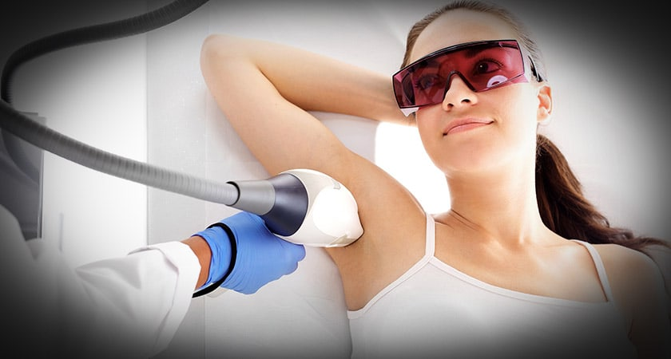

Team | Esi’s Studio
Willkommen auf unserer Webseite. Nehmen Sie sich Zeit und informieren
Sie sich über unsere Leistungen und Angebote. Gerne können Sie einen
unverbindlichen Termin bei uns buchen und sich ausgiebig über die
gewünschte Behandlung beraten lassen.
Sie finden uns im Herzen Siegburgs. Wir freuen uns auf Ihren Besuch.
Dauerhafte Haarentfernung IPL-SHR

IPL-SHR entfernt unerwünschtes Körperhaar nahezu schmerzfrei und
dauerhaft. Diese Methode basiert auf einer Lichtimpuls-Technologie zur
besseren Verödung der Hautpapille. Sie ist sehr sanft und dennoch
äußerst wirkungsvoll. Je nach Haarfarbe, Körperregion und Haardichte
lassen sich die Haare in mind. 6–10 Sitzungen entfernen. IPL steht
übrigens für „Intense Pulsed Light“, SHR für „Super Hair Removal“.
Alternativ können Sie sich auch über die MPL-Haarentfernung informieren,
die auch für dunklere Hautfarben geeignet ist.
Auf einen Blick:
- endlich haarfrei
- nahezu schmerzfrei
- nie wieder lästige Stoppeln
- nie wieder Hautreizungen